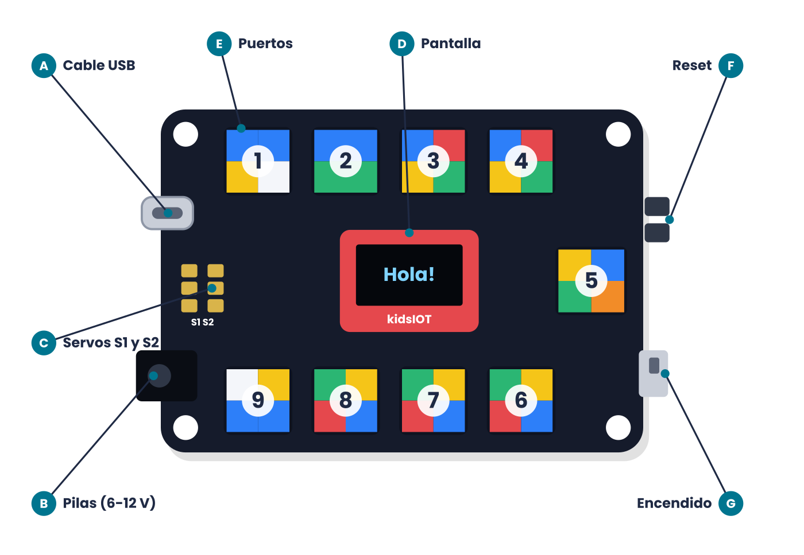

Robótica educativa · Primaria · 8-13 años
Robótica con kidsIOT
Construye, conecta y programa con MicroBlocks
Un material para aprender robótica con el kit Kidsbits STEAM Engineering IoT: de la primera luz en la pantalla a una noria que avisa cuando llueve o una grúa que se maneja con el mando a distancia.
12 actividades8 máquinas25 programas .ubp

00 Contenidos
01Para empezarEl kit pieza a pieza, la placa kidsIOT, los sensores y actuadores, y el entorno MicroBlocks.02Comenzamos12 actividades cortas con los sensores, sin montar nada, para aprender a programar la placa.03Retos8 máquinas con montaje paso a paso, ciencia, depuración y niveles. Y dos retos finales.04Para saber másInformación técnica, software, conexiones, metodología y evaluación, diario de ingeniero y recursos.
→ Las máquinas
↓ Descargas
→ Para el profesorado
Cada actividad y cada reto incluye su programa de MicroBlocks (.ubp), que se abre arrastrándolo a MicroBlocks. Las pistas y las soluciones están escondidas en desplegables para que el alumnado intente primero. Las notas técnicas, la metodología y la evaluación están en Para saber más.